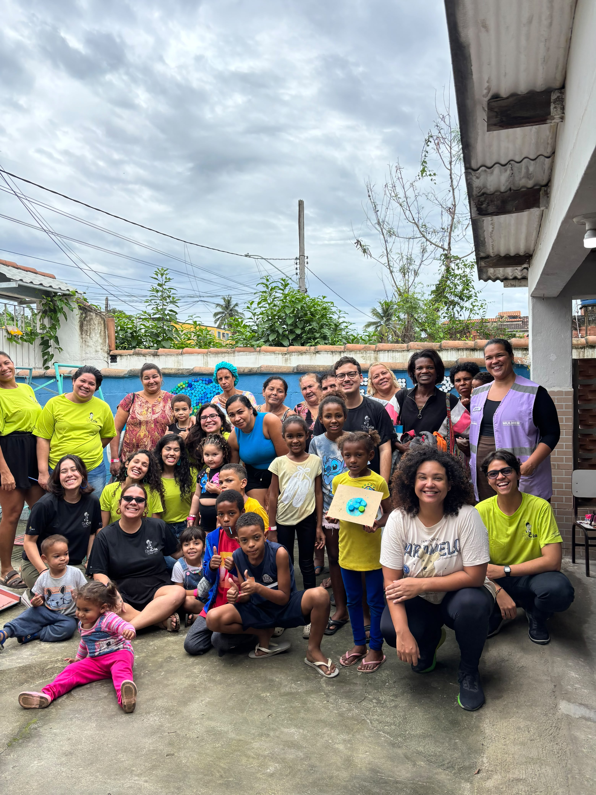
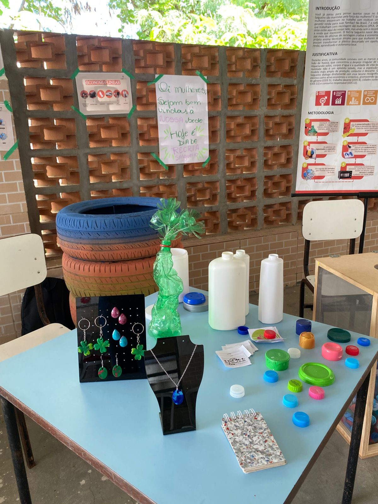
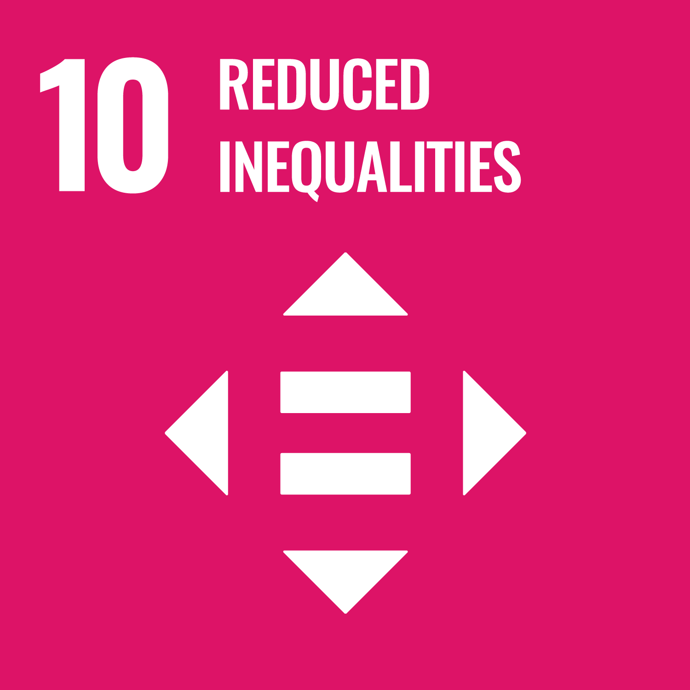
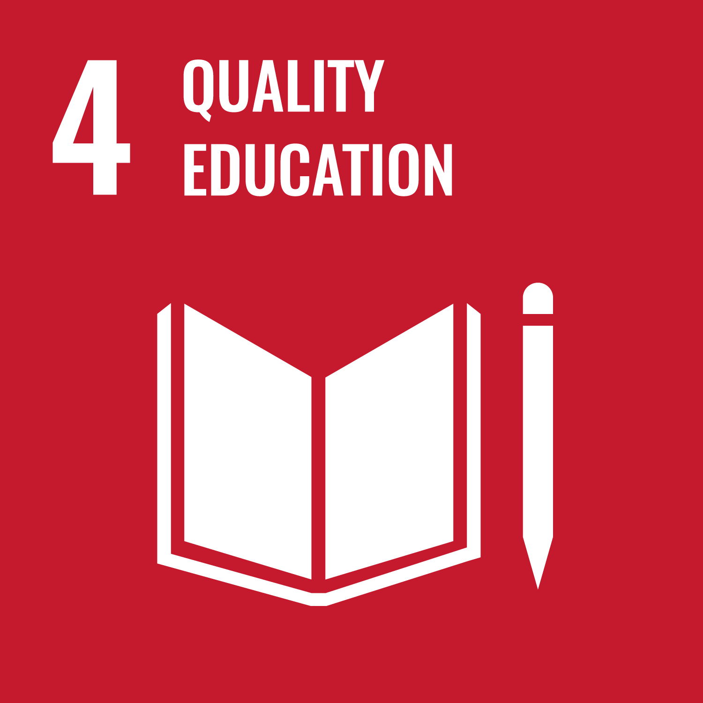
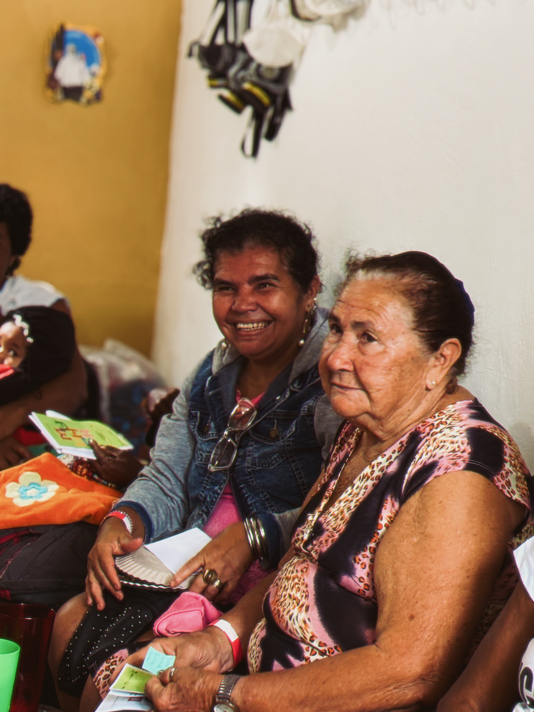
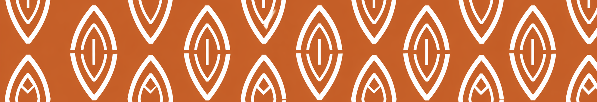

Educação ambiental
Construção de conhecimentos sobre resíduos, consumo, descarte e cuidado com o território por meio de experiências práticas.

Resíduos que se transformam, renda que circula no território.
Conheça o projetoO ReCria Salgueiro é um projeto do Programa ECOLAB, do Espaço Gaia, desenvolvido em parceria com a Enactus UFRJ, que une educação ambiental, economia verde e geração de renda por meio da transformação de materiais que seriam descartados.
A partir da coleta e do reaproveitamento de resíduos, especialmente tampinhas plásticas, as participantes aprendem técnicas de reciclagem criativa e desenvolvem biojoias e outros produtos, transformando aquilo que seria descartado em peças com valor ambiental, social e econômico.
As peças produzidas são comercializadas e o valor arrecadado com as vendas retorna para as próprias participantes, sendo dividido entre elas.
Dessa forma, o ReCria cria um ciclo no qual o resíduo é coletado, transformado, comercializado e convertido em renda que permanece circulando entre mulheres do território.
Mais do que reciclar materiais, o projeto demonstra que a transição para uma economia ambientalmente responsável também pode acontecer nas periferias, gerando conhecimento, trabalho, renda e autonomia.


Construção de conhecimentos sobre resíduos, consumo, descarte e cuidado com o território por meio de experiências práticas.
Materiais que seriam descartados retornam ao ciclo produtivo e são transformados em novos produtos, ampliando sua vida útil.
As participantes produzem e comercializam biojoias, e os recursos provenientes das vendas são distribuídos entre as próprias mulheres envolvidas na produção.
O ReCria trabalha a partir de uma lógica coletiva, aproximando produção, comercialização e divisão dos recursos gerados e fortalecendo a autonomia econômica das participantes.

O ReCria constrói um ciclo de transformação dentro do próprio território.
A comunidade participa da coleta dos materiais, que são separados e utilizados pelas participantes na produção das peças. As biojoias produzidas são comercializadas e o recurso arrecadado retorna para as mulheres envolvidas, fortalecendo uma dinâmica coletiva de geração de renda.
O projeto também desenvolve atividades de educação ambiental com crianças e famílias, campanhas e pontos de coleta de tampinhas e ações de sensibilização sobre resíduos, reciclagem e consumo responsável.

O ReCria parte do princípio de que a pauta ambiental também precisa falar sobre trabalho, renda e justiça social.
Ao transformar resíduos em produtos e fazer com que a renda gerada retorne para as próprias participantes, o projeto constrói uma experiência de economia verde e solidária dentro do território.
A iniciativa mostra que mulheres periféricas não precisam aparecer apenas como pessoas impactadas pelos problemas ambientais. Elas também são produtoras de soluções, conhecimento, trabalho e renda para suas comunidades.
O projeto ainda se conecta ao Mercado Comunitário do Espaço Gaia, onde a entrega de tampinhas integra as estratégias de mobilização comunitária, fortalecendo a relação entre reciclagem, participação e segurança alimentar.
Resíduos retornam ao ciclo produtivo.
Conhecimentos ambientais se transformam em atividade produtiva.
O valor das vendas retorna para as participantes.
Mulheres fortalecem sua participação econômica a partir de uma construção coletiva.
Valor econômico e ambiental é produzido e permanece circulando na comunidade.
Educação ambiental, economia verde e autonomia construídas a partir da comunidade.
Conheça outros projetos